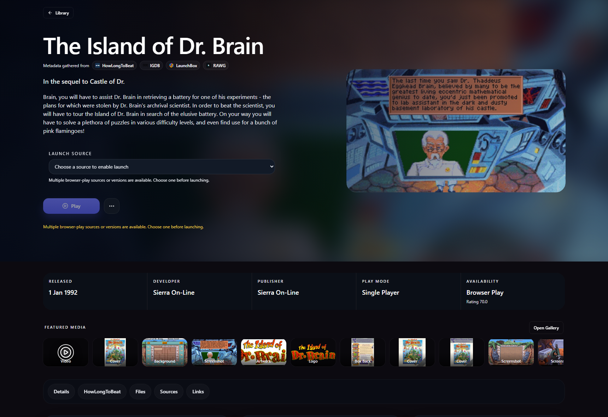
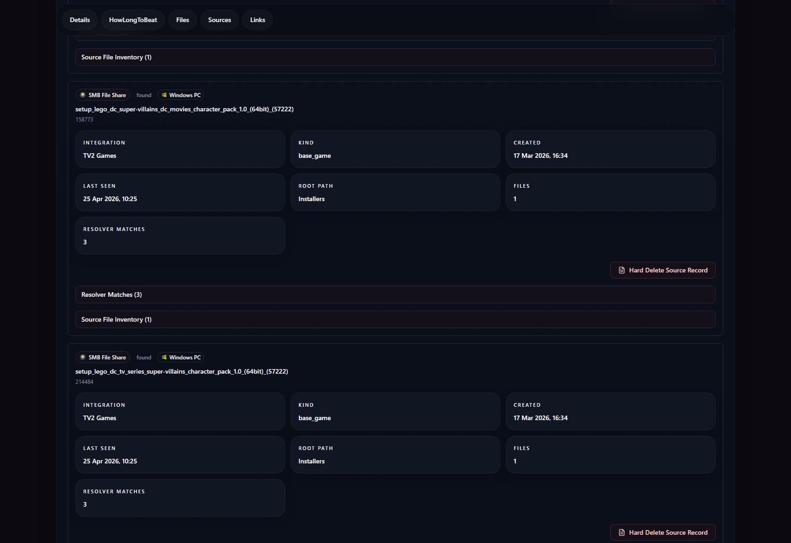
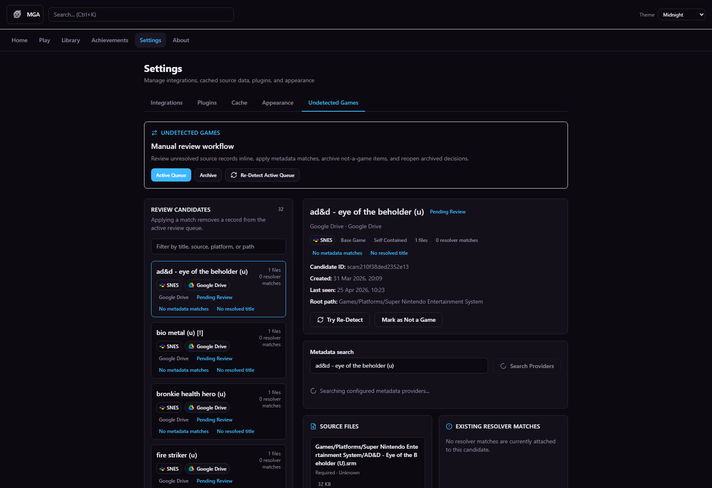

Canonical game merge
One canonical game can absorb multiple source records, provider matches, files, and media instead of leaving you with duplicate launcher rows.
Local-first canonical game library
MGA merges storefronts, ROMs, cloud runtimes, network shares, removable drives, metadata providers, media, files, and achievements into source-backed canonical game pages that stay local by default.
Most launchers start from a storefront or a folder. MGA starts from the game identity. Every detected source, provider match, file location, achievement system, and runtime remains visible, so you can understand, launch, fix, and curate the game instead of trusting a hidden match.

What makes MGA different
One canonical game can absorb multiple source records, provider matches, files, and media instead of leaving you with duplicate launcher rows.
Multiple concrete versions can live under one canonical game, with per-source launch options and achievement sets kept visible.
MGA keeps every integration visible as source-backed evidence, including source records, provider IDs, resolver matches, and attached files.
Your database, media cache, config, and plugins stay on your machine unless you explicitly add sync integrations.
Detection failures stay visible and repairable through an explicit review queue with fuzzy, platform-aware provider search instead of being silently hidden behind a bad automatic match.
The problem
A serious game collection manager has to deal with storefronts, ROM folders, cloud-ready entries, installers, provider metadata, achievements, and files that all describe the same game differently.
The MGA model
MGA is built more like a self-hosted game library and source-backed game launcher than a store-first importer.
Source-backed canonical game pages
A canonical game page should tell you what the game is, where MGA found it, where it can run, which providers contributed metadata, what files and media are attached, what achievements are known, and what can be fixed manually.

Screenshot proof



Capture a canonical game page with at least 3 source/provider records visible in the same frame.
Capture a cross-system achievement example with Steam, Xbox, and RetroAchievements visible in one proof set.
Comparison
| Capability | MGA | Typical store launcher | Typical ROM frontend |
|---|---|---|---|
| Canonical merge across stores, ROMs, cloud, and files | Core model | Usually no | Usually no |
| Source provenance per game | Visible by design | Rare | Rare |
| Local-first database, media, and config | Yes | Often no | Usually local, narrower scope |
| Manual review when detection fails | Explicit workflow | Rare | Varies |
| Game page with metadata, media, achievements, files, and source records | Yes | Partial | Partial |
| SMB / NAS / removable drive awareness | Core scenario | Rare | Sometimes |
| Browser / cloud / runtime launch flows | Available where configured | Limited | Runtime-specific |
| REST API over the same local library | Yes | Rare | Rare |
What ships now vs later
Install / download
Start MGA.cmd.http://127.0.0.1:8900.MGA runs locally on 127.0.0.1:8900 by default and stores runtime state beside the portable folder unless sync integrations are configured. LAN binding is opt-in through the server LISTEN_IP config.